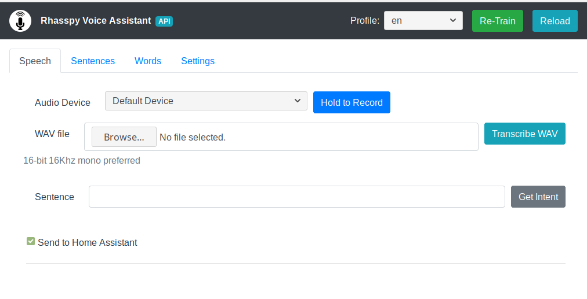
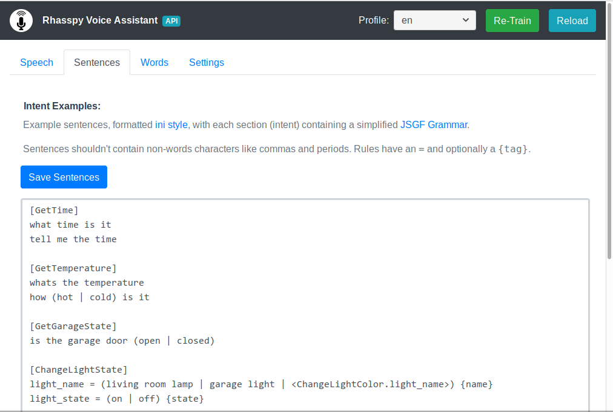
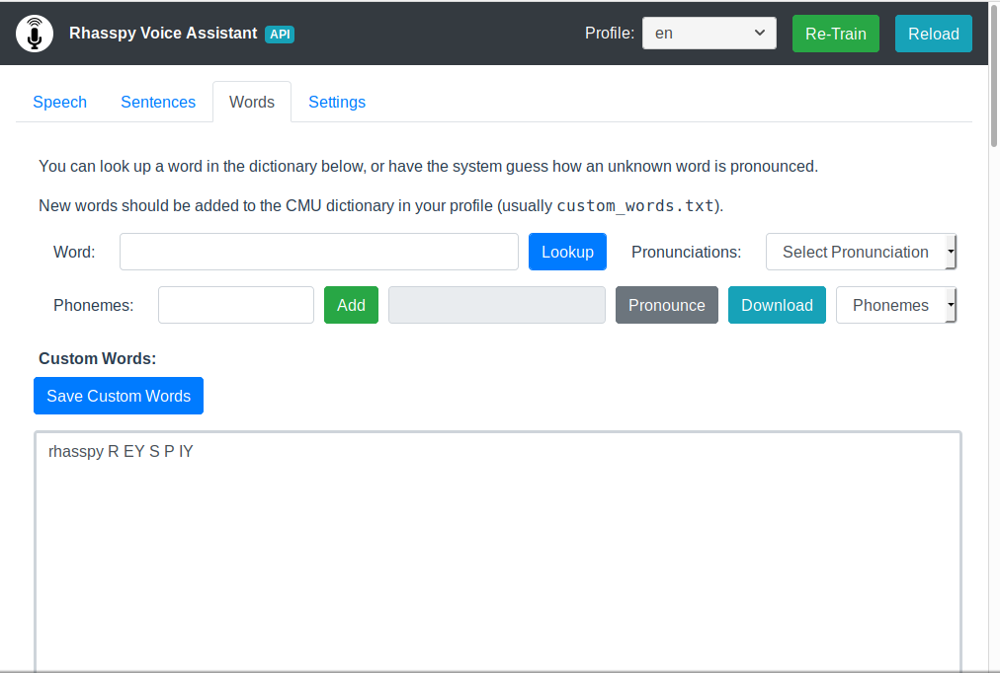
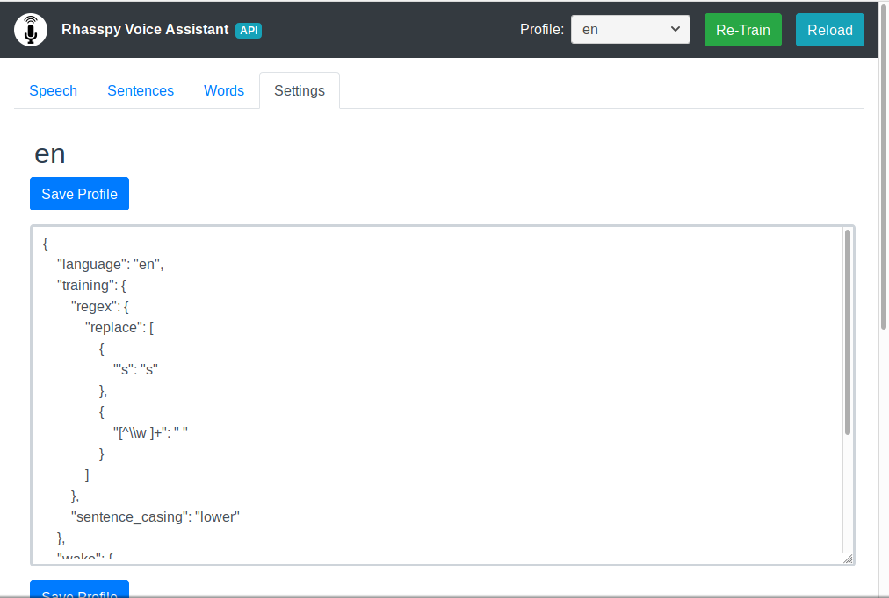

rhasspy directory in your Hass.io /addons directory (see this tutorial for details on installing local add-ons)Add-On Store tab and click on "Rhasspy Assistant" under "Local add-ons"INSTALL and watch the system log (under the Hass.io System tab) to see when it's finished (it may take 10 minutes or more on a Raspberry Pi)Start and wait untilOpen Web UI to open the web interface. If you get a connection error, Rhasspy may still be starting up. Wait a minute and refresh.Rhasspy's web-based user interface lets you manage custom words and commands as well as test Rhasspy using your microphone or by uploading a WAV file.
The default tab in Rhasspy is Speech, which lets you tests various aspects of
Rhasspy's speech/intent recognition:

The image above shows important parts of the web interface:
Re-Train - trains the speech/intent recognizer with your custom sentences/wordsReload - clears cached speech/intent objects from memoryHold to Record - start recording from microphone when pressed, stop recording when releasedhomeassistant.url in your profile)This tab contains the custom commands for Rhasspy to recognize. These are categoried by intent, and use a simplified JSGF grammar. Sentences are listed under the [IntentName], and may contain [optional words] or (one |or |more | alternative | items). Rules are defined like rule_name = ... and referenced in sentences as <rule_name>. Adding a {tag} to a word, rule, etc. will set a slot with the tag name in the event Rhasspy sends to Home Assistant ((value) {name} will be name: value).

You can define custom words here by looking up pronunciations of other words or by having Rhasspy guess pronunciations using phonetisaurus.

Rhasspy gets settings for your current profile by overlaying the JSON define in profile.json with the defaults.json file in your profiles directory. See the profiles docmentation for more details.
